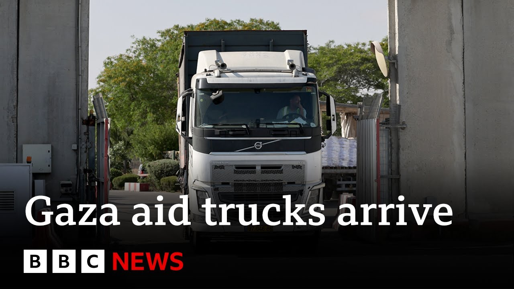

【加沙援助物资尚未送达平民手中，以色列总理为军事扩张辩护 | BBC新闻】
Summary: UN teams in Gaza have collected over 90 aid trucks for Palestinians, with distribution expected soon, three days after Israel lifted an 11-week blockade. Netanyahu rejects criticism of Gaza's humanitarian crisis, while aid remains insufficient amid famine risks and ongoing Israeli strikes.
摘要： 联合国团队在加沙收集了90多辆援助卡车，预计将在以色列解除11周封锁三天后分发。内塔尼亚胡驳斥对加沙人道危机的批评，而援助物资在饥荒风险和持续空袭中仍不足。

⏱️ Estimated Reading Time: 5 min
Now, more than 90 trucks carrying aid for Palestinians in Gaza have been collected by UN teams in the territory, and they're expected to be distributed.
目前，联合国团队已在加沙地区收集了90多辆运往巴勒斯坦人的援助卡车，预计将进行分发。
That's 3 days after Israel lifted an 11-week total blockade on aid deliveries.
这是在以色列解除对援助物资长达11周的全面封锁三天后。
Israel's Prime Minister Benjamin Netanyahu has rejected international criticism about the humanitarian situation in Gaza.
以色列总理本杰明·内塔尼亚胡驳斥了国际社会对加沙人道主义局势的批评。
Well, for more, let's speak to our correspondent, Wira Davis, who's at the Kerum Shalom border crossing.
更多详情，让我们连线在凯雷姆沙洛姆边境的记者维拉·戴维斯。
We're some aid getting through, but uh from all that we're hearing from aid agencies, clearly still not enough to meet the needs of what is a very dire humanitarian situation.
部分援助物资正在通过，但据援助机构反馈，显然仍不足以满足严峻的人道主义需求。
Yeah, many UN agencies, including the World Food Program, are talking about the 2.1 million people in Gaza who are at risk of famine.
是的，包括世界粮食计划署在内的多家联合国机构提到，加沙210万人面临饥荒风险。
Starvation is directly affecting about a quarter of the population, says the WFP, and they're been trying to get more aid in, of course, after that 11-week long Israeli blockade.
粮食计划署称，饥饿直接影响约四分之一人口，他们在以色列长达11周的封锁后正努力获取更多援助。
Now, Israel partially lifted that blockade earlier this week.
本周早些时候，以色列部分解除了封锁。
And today, we've seen several trucks coming in carrying mainly flour.
今天，我们看到多辆卡车运入，主要装载面粉。
There's been an agreement by the the Israeli government after criticism from the Americans and others to allow very basic food materials in.
以色列政府在美国等国的批评后同意允许基本食品物资进入。
Uh the problem in the last couple of days though, even though about 90 trucks had crossed the border, is that they weren't able to be picked up on the other side by Palestinian drivers, uh largely because of the security situation there.
过去几天的问题是，尽管约90辆卡车越过边境，但巴勒斯坦司机因安全局势无法在另一侧接收。
The UN had told us that they didn't feel happy with the route that the Israeli army wanted them to take through populous areas where looting and theft by armed gangs would be a real issue, especially with so little aid getting through.
联合国表示，他们对以军要求其穿过人口密集区的路线不满，因武装团伙抢劫盗窃将成严重问题，尤其援助物资如此稀少。
What the UN has been saying is that you need almost need to flood Gaza with aid.
联合国一直强调，需要几乎“淹没”加沙的援助。
So it drives away that insecurity.
这样才能驱散不安全感。
It drives down the black market prices for things like flour and sugar and milk.
并压低面粉、糖和牛奶等黑市价格。
But at the minute only about 90 trucks have got through.
但目前仅约90辆卡车通过。
But they have uh fortunately been able to clear the problems on the other side of the border.
所幸边境另一侧的问题已得到解决。
And most of that flour has now been taken to warehouses and bakeries in Gaza where you know some of those starving people can start to to get some of the very basic food they need.
大部分面粉现已运至加沙的仓库和面包店，部分饥饿人群可开始获取基本食物。
But as we've been hearing all week from various agencies, when you take the lack of medicines, the lack of fuel for desalination plants and the lack of fresh food, about 600 trucks a day are needed.
但据多家机构本周反馈，算上药品短缺、海水淡化厂燃料不足和新鲜食物匮乏，每日需约600辆卡车物资。
What we're seeing now is at most about 90 trucks a day.
目前每日最多仅约90辆卡车。
Um, and it is really in drips and drabs.
这简直是杯水车薪。
Just very briefly, just remind us what's happening on the ground in terms of that ongoing offensive.
简而言之，请提醒我们当前地面攻势的情况。
Yeah, well, all morning we've been hearing the booms of Israeli air strikes and Israeli artillery fire here.
是的，整个早晨我们一直听到以军空袭和炮火的轰鸣。
That Israeli military action has been stepped up.
以军军事行动已升级。
30 people killed in Gaza reportedly in the last few hours and more than 600 since this Israeli military offensive was really stepped up.
据报道，过去几小时加沙30人丧生，自以军攻势升级以来已超600人死亡。
So yeah, Israel's military action very much continuing.
因此，以军军事行动仍在持续。
Okay, where Davis is at the KM Shalom border crossing.
好的，戴维斯在凯雷姆沙洛姆边境的报道。
Thank you very much for bringing us up to date on the ongoing aid situation in Gaza.
非常感谢您为我们带来加沙援助局势的最新进展。